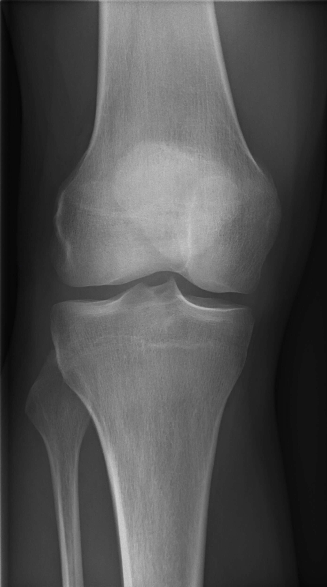
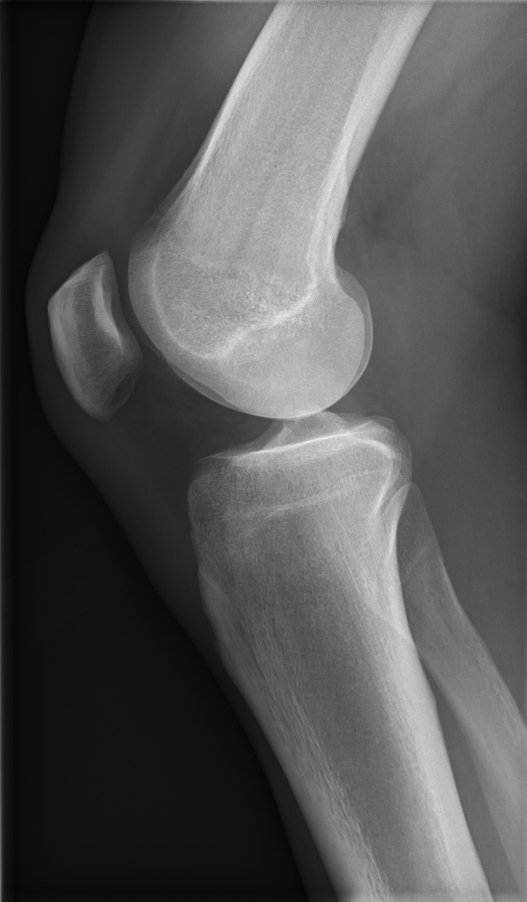
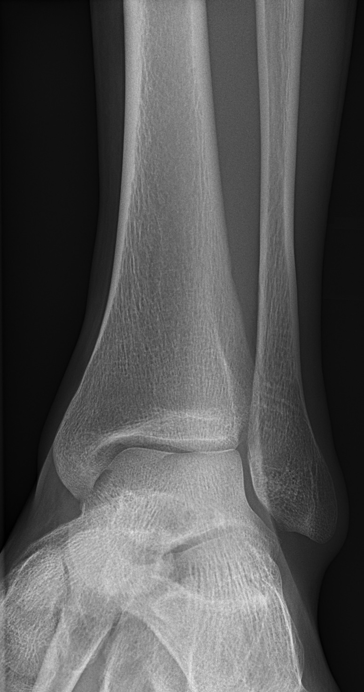

APFrontal view

Demonstrates the distal tibia and fibula, malleoli, talus and overall frontal ankle alignment.
Key focusOverall bony alignment and ankle joint space.
A practical approach to positioning, image quality and systematic assessment of the AP and lateral knee — with an emergency-radiology focus on subtle fractures, effusion and injuries that are easy to overlook.
For the standard knee series, use the AP and lateral projections as the foundation of assessment. Additional projections are selected according to the clinical question and local protocol.
In acute injury, deliberately search beyond the site of maximum tenderness. A small avulsion, plateau impaction or joint effusion can be the clue to a more important injury.


Use local departmental technique where it differs. The following is a learning framework cross-checked against standard positioning references.
Patellar or intercondylar/tunnel projections may be added according to the suspected injury and local protocol. Do not treat an additional view as a substitute for clinical assessment or the standard views.
Select a projection. Labels are anchored to the actual supplied radiographs and use the natural image aspect ratio.
A practical sequence derived from emergency-radiology principles and cross-checked against RCR/ACR guidance.
These are teaching features from Raby's emergency-radiology approach. They are not a substitute for formal reporting or local protocols.
For acute trauma, the clinical decision to image should be considered alongside decision rules and examination findings. ACR guidance supports knee radiography in several acute-trauma scenarios, including when focal tenderness, effusion or inability to bear weight is present. When radiographs are negative but occult fracture or internal derangement remains suspected, MRI without contrast is a commonly appropriate next study; CT can be appropriate in selected fracture scenarios.
Use the same sequence every time until it becomes automatic.
The RCR describes the Pittsburgh Knee Rules as a tool for triaging traumatic knee pain. Its listed criteria include traumatic knee pain with age under 12 or over 50, or inability to walk four weight-bearing steps in the ED. Use the current local/clinical pathway when applying decision rules.
In trauma, the horizontal-beam lateral can help demonstrate an effusion and lipohaemarthrosis. RCR adequacy guidance emphasises adequate exposure and femoral-condyle congruity for this purpose.
Core references used to cross-check positioning, anatomy, trauma assessment and imaging pathways.
Standard projection for initial assessment of the ankle.
The standard ankle series commonly includes AP, Mortise and Lateral projections. Select a projection to explore positioning, central ray and image evaluation.
AP, Mortise and Lateral are complementary projections. Reviewing them together gives a more complete assessment of ankle alignment, bones and joint spaces.
Demonstrates the distal tibia and fibula, malleoli, talus and overall frontal ankle alignment.

Demonstrates the ankle mortise with reduced malleolar superimposition and allows focused assessment of the joint spaces.

Provides complementary assessment of the distal tibia and fibula, talus, calcaneus and hindfoot relationships.


Recheck leg and foot alignment, centring and collimation before exposure.


Rotate the leg and foot together and reassess the intermalleolar alignment.


Support the patient comfortably and adjust positioning to minimise rotation without unnecessary movement.
Select AP, Mortise or Lateral, then click an anatomical structure to display a precise point, leader line and label outside the radiograph.
Review individual structures or show all anatomy labels.
Focus on the ankle mortise, joint spaces and distal tibiofibular relationship.
Review the ankle and hindfoot anatomy visible in lateral projection.
Use a structured approach to check image quality, alignment, bones, joints and soft tissues before moving on to specific pathology.
AP: assess the distal tibiofibular relationship and tibiotalar joint.
Mortise: assess the mortise, joint-space symmetry and distal tibiofibular relationship.
Lateral: assess the lateral relationship of the distal fibula and tibia and demonstrate the tibiotalar joint.
Trace the cortex systematically.
Look for cortical disruption, a fracture line, displacement, angulation and small avulsion fragments.
Look for widened medial clear space, abnormal talar position and widening of the distal tibiofibular relationship.
Look for joint-space narrowing, osteophytes, subchondral sclerosis and cystic change.
For acute ankle trauma, the Ottawa Ankle Rules are a clinical decision rule used to help determine whether ankle radiographs are indicated in appropriate patients.
Important: This is a clinical decision rule, not a substitute for clinical assessment or local imaging/referral protocols. The ACR notes exclusion criteria and validates the rule for adults and children over 5 years in appropriate acute-trauma settings.
Complete the whole search pattern rather than stopping after finding the first abnormality.
Review the AP, Mortise and Lateral radiographs. Use the ABCS approach and decide whether the series demonstrates satisfactory alignment and visible anatomy.
APFrontal assessmentLateralLateral and hindfoot assessmentBefore concentrating on a suspected fracture or focal abnormality, what should you do?
Choose the best approach when assessing the bones.
Move beyond memorising positioning. Understand what each projection contributes, how to approach the images systematically, and how to apply that reasoning to trauma.
Each projection provides complementary information. Avoid treating the AP, Mortise and Lateral as three isolated pictures.
Provides an overall frontal assessment of the distal tibia, distal fibula, malleoli and tibiotalar relationship.
Think: overall alignmentHelps demonstrate the ankle mortise and allows assessment of joint-space symmetry and the distal tibiofibular relationship.
Think: mortise alignmentProvides a lateral assessment of the distal tibia, talus and hindfoot, including the tibiotalar and subtalar regions.
Think: lateral relationshipsUse the same search pattern every time. A consistent method helps reduce the chance of overlooking an abnormality.
In trauma, a systematic search is especially important. Trace the cortex and assess alignment rather than stopping when you find the first abnormality.
Follow the visible cortical margins of the distal tibia, fibula, malleoli and talus. Look for interruption, fracture lines and small fragments.
Assess talar position within the mortise and look for abnormal displacement, tilt or widening of relevant relationships.
Small avulsion fragments, subtle cortical breaks and abnormalities away from the reported pain can be easy to miss.
Use AP, Mortise and Lateral together. A finding that is subtle on one projection may be clearer on another.
A patient presents following an ankle injury. You notice a small possible cortical irregularity on one view. What should you do next?
Before calling an ankle series normal, mentally complete the sequence:
Image quality → Alignment → Bones → Cartilage/joints → Soft tissues → Compare all projections.
RADPOCKET uses recognised radiographic positioning and emergency radiology references to verify factual content. The explanations, interface and illustrations are independently created for RADPOCKET.
References are used for factual verification and educational development. Third-party copyrighted text, diagrams and images are not reproduced unless appropriately licensed or otherwise permitted.